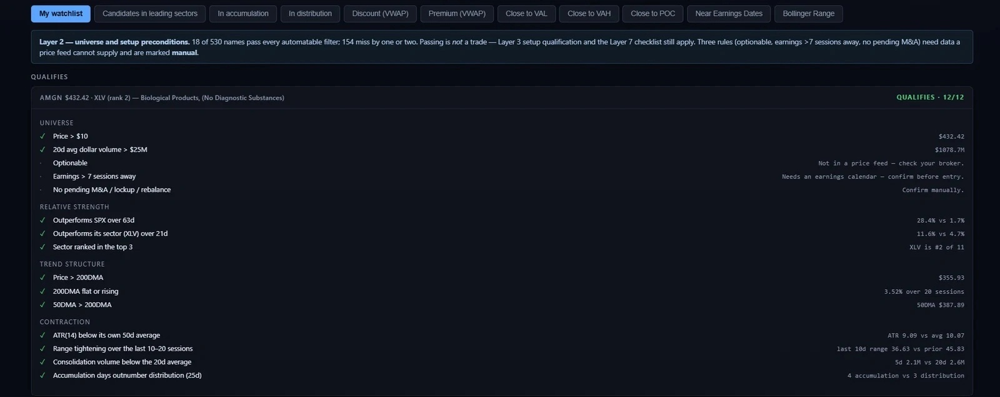

This is a demonstration website built to showcase web design and AI-assisted development. All data, figures, charts, tickers, and analysis shown are fictional and for illustration only — none of it reflects any real security, company, or market.
Nothing on this site is financial, investment, or trading advice, and no professional or fiduciary relationship is created by using it. This site and its content are provided "as is," without warranty of any kind. By clicking "I Agree," you confirm you have read and agree to these terms, and that you will not rely on any information on this site for research, analysis, or decisions of any kind.
This site uses your browser's local storage only to remember that you've dismissed this notice.
Universe and setup preconditions. Find candidates that clear the automatable bar before drilling into individual charts.
The Screener is the entry point: sort 500+ tickers by preset filters or create your own watchlist, then see which names qualify against four categories of rules.

Real screenshot — Screener, Example qualify card
Liquid, tradeable names. Price >$10, 20d avg volume >$25M, optionable, earnings >7 sessions out.
Outperforms S&P 500 over 63d, outperforms sector over 21d, sector ranked top-3.
Price >200DMA, 200DMA flat/rising, 50DMA >200DMA. Classic uptrend alignment.
ATR compressed vs own 50d avg, range tightening, consolidation volume below 20d average.
All information and data on this site exist only to build an example website. Ignore them and do not use them for any analysis.
Not an automated trader. Solaris Flow is a decision-support calculator only — every trade is entered and exited by hand in your broker. It synthesizes data, scores quality, and keeps a journal. It does not place orders, connect to a broker API, or touch real money.
Not financial advice. This is a personal research tool and hobby project — I am not a licensed financial advisor, broker-dealer, or professional trader. I am simply interested in using AI to build interesting applications and explore new ideas in software development. Every ticker, chart, screenshot, and figure shown throughout this site is an illustrative example for demonstration purposes only — none of it is real trading analysis or a recommendation on any specific security. This entire site and Solaris Flow application were built using Claude Code and AI.
This site and all its content are provided "as is," without warranty of any kind, express or implied, including as to accuracy, completeness, or fitness for a particular purpose. No fiduciary, advisory, or professional relationship is created by your use of this site. You are solely responsible for your own research, judgment, and any trading or investment decisions you make. By accessing or using this site or its information in any way, you assume all associated risk and agree to release, indemnify, and hold harmless the creator from any and all liability, claims, losses, or damages of any kind arising from or connected to that use.